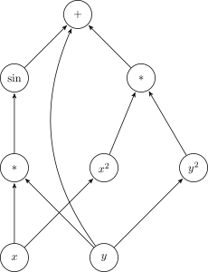

☰
+
-
1
The language of mathematics
❯
1.1 Black box warnings
1.2 Computer algebra
1.3 Objects or elements and the symbols
and
1.4 Sets
1.5 Ordering numbers
1.6 Propositional logic
1.7 What is a mathematical proof?
1.8 The concept of a function
A
Annotation playground
❯
Introduction to Mathematics and Optimization
Niels Lauritzen
